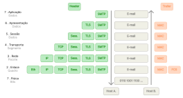
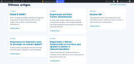

Bases para a Internet
Conteudo apresentado
O que vimos sobre a internet
Ao longo do semestre, estudamos que a internet é uma rede mundial formada por milhares de redes menores (de empresas, universidades, governos e provedores) que se comunicam usando regras em comum. Aprendemos também a diferença entre internet e web (WWW): a web é apenas um dos serviços que funcionam sobre a internet, assim como e-mail, jogos online e streaming.
Introdução a internet
Na disciplina, vimos que uma rede é um conjunto de dispositivos conectados para compartilhar dados e recursos. Elementos estudados:
#- Hosts/dispositivos finais: computadores, celulares, servidores
- Meios de transmissão: cabos (par trançado, fibra óptica) e sem fio (Wi-Fi, 4G/5G)
- Dispositivos de rede: switch, roteador e modem
Classificação por alcance:
#- PAN: pessoal (ex.: Bluetooth)
- LAN: local (casa, escritório)
- MAN: metropolitana
- WAN: longa distância (a internet é a maior WAN)
Também estudamos o modelo cliente-servidor, em que o cliente solicita um serviço (o navegador, por exemplo) e o servidor responde (o site).
Endereçamento
Durante as aulas, vimos os principais tipos de identificação em rede:
#- Endereço IP: identifica um dispositivo na rede. Estudamos o IPv4 (32 bits) e o IPv6 (128 bits), criado devido ao esgotamento dos endereços IPv4.
- Endereço MAC: identificador físico da placa de rede, único de fábrica.
- DNS: traduz nomes (
google.com) em endereços IP. - Portas: indicam qual aplicação recebe os dados (80 para HTTP, 443 para HTTPS).
Modelo OSI

Diagrama desenvolvido baseado nas aulas sobre protocolos. Ele exemplica as camadas e tambem o encapsulamento de dados.
Blog WordPress

Como atividade final, estamos desenvolvendo um blog pelo site WordPress. Ele fala sobre assuntos relacionados a materia. Link para o blog no titula da atividade.